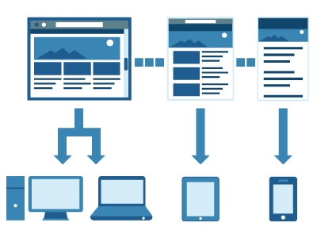

Las media queries permiten a las páginas web utilizar diferentes declaraciones de estilo de la hoja de estilos en base al ancho de la pantalla del dispositivo en el que se visualiza el sitio web. En los diseños web responsive, una media query es una declaración CSS que se utiliza como parámetro para saber cuándo utilizar otra declaración de estilo en base a las dimensiones del dispositivo en donde se visualiza la página web. Hay dos maneras de utilizar una media query: utilizando una hoja de estilos externa o escribiendo directamente en la hoja de estilos.

Tal y como ya hemos visto, las Media Queries de CSS3 mejoran la visualización de nuestros proyectos web. En esta ocasión abordamos el tema desde un punto de vista más práctico e incluimos algunos ejemplos que podemos implementar en el código y facilitarán que nuestros diseños web se adapten a cualquier medio y pantalla, algo imprescindible en el desarrollo web hoy en día.
Cómo usar las Media Queries en diseño web responsive
La cascada que, a nivel de CSS, atañe completamente a las reglas de estilo.
Aplicar la regla que llamamos Mobile First.
Los estilos sin Media Queries serán globales y estos afectarán a todos los dispositivos.
Lo siguiente es colocar en cabeza las Media Queries con la siguiente anchura de pantalla que necesites.
Por último, colocaremos las Media Queries para situar en orden creciente el resto de anchura de pantallas. Es decir, se finaliza con las Media Queries con la anchura mayor de pantalla.
Referencias:
Qué son las media queries en los diseños web responsive. (2016, November 14). Inercia Digital. https://blog.inerciadigital.com/2016/11/14/media-queries-disenos-web-responsive/
de Zúñiga, F. G. (2017, February 10). Cómo usar las Media Queries en diseño web responsive. Blog de arsys.es; Arsys Internet. https://www.arsys.es/blog/programacion/media-queries-responsive